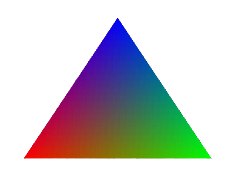

Overview
Give a high-level overview of what you implemented in this project. Think about what you've built as a whole. Share your thoughts on what interesting things you've learned from completing the project.
Section I: Rasterization
Part 1: Rasterizing single-color triangles
Walk through how you rasterize triangles in your own words:
We iterated through the points in the bounding box and checked whether or not the point was inside the triangle using the equations from lecture. We first made an “inside” function, which simply calls our line function 3 times, for each side of the triangle. To account for whether the points were given in a clockwise or counterclockwise direction, we said that the point was inside the triangle if all 3 line functions were greater than 0, or if all 3 were less than 0. Finally, if the pixel was inside, we called the fill_pixel function given to us.
Explain how your algorithm is no worse than one that checks each sample within the bounding box of the triangle.
For the x direction, we only sampled between the leftmost and rightmost coordinates given. The same applies for the y direction, but for the lowest and highest y coordinates. This defines the bounding box, so this is no worse than one that checks each sample within the bounding box. Any pixels outside the bounding box must be outside the triangle, so we can safely ignore them.
Show a png screenshot of basic/test4.svg with the default viewing parameters and with the pixel inspector centered on an interesting part of the scene.
TBDDDD insert screen shot here
Part 2:
Walk through your supersampling algorithm and data structures. Why is supersampling useful? What modifications did you make to the rasterization pipeline in the process? Explain how you used supersampling to antialias your triangles.
Supersampling has a frame_buffer which stores RGB values for width*height pixels of the final image in screen space. There is also a temporary sample_buffer, which contains R,G,B values for width*height*sampleing_rate pixels. There are sampling_rate times more pixels than before because we want to break up each pixel into multiple sub-pixels. This way, instead of just checking whether the center of a pixel is inside the triangle, we can check multiple sub-pixels within that pixel. The more sub-pixels that are within the pixel, the sharper the color will be. If there are very few sub-pixels, then it will be a mix of white and the color, so will be a much lighter shade. This helps anti-aliasing because we no longer have sharp jaggies. These jaggies are reduced because we gradually go from a sharp color to white, meaning the sharp color doesn’t stand out.
Show png screenshots of basic/test4.svg with the default viewing parameters and sample rates 1, 4, and 16 to compare them side-by-side. Position the pixel inspector over an area that showcases the effect dramatically; for example, a very skinny triangle corner. Explain why these results are observed.
TBDDD insert screen shot here and give descriptions

|

|
|
Part 3: Transforms
In this part we implemented scaling translating and rotating. TBDDDDDD show cubeman and explain
Section II: Sampling
Part 4: Barycentric coordinates
Explain barycentric coordinates in your own words and use an image to aid you in your explanation. One idea is to use a svg file that plots a single triangle with one red, one green, and one blue vertex, which should produce a smoothly blended color triangle.
Barycentric coordinates are a way to represent points within a triangle. Instead of using x,y coordinates, it uses alpha, beta, and gamma, where these 3 values together form the coordinates of this new coordinate system. Each parameter represents how close the point is to a given corner. As you move further from a corner, it loses the strength of that color, and as you get closer to another corner, it becomes more like that color. This results in a smooth gradient of the 3 colors, as shown in the image below.
Show a png screenshot of svg/basic/test7.svg with default viewing parameters and sample rate 1. If you make any additional images with color gradients, include them.
|

|
|
Part 5: "Pixel sampling" for texture mapping
Explain pixel sampling in your own words and describe how you implemented it to perform texture mapping. Briefly discuss the two different pixel sampling methods, nearest and bilinear.
Pixel sampling is a way to figure out which color to give to a specific coordinate. To implement texture mapping, we first looped over all points in the triangle (as in all previous parts). For each pixel, we looped over the number of sub-pixels aka samples it has. For each sample, we converted the (x,y) coordinate in image space, to barycentric coordinates. We’re given the (xi, yi) coordinates that form a triangle in image space, and the matching (ui, vi) coordinates forming the corresponding triangle in texture space. This means we can use the barycentric coordinates of our point, and use the alpha*A + beta*B + gamma*C formula, where alpha, beta, and gamma came by converting the (x,y) cartesian coordinates to barycentric coordinates. The A, B, and C are simply (ui, vi) cartesian coordinates of the corners of the triangle. The weighted sum returns a new cartesian coordinate, in texture space. This coordinate may not consist of integer numbers, and our texture picture only has colors defined at each integer pixel.
For this project, we used 2 different ways of choosing a color for this intermediary pixel. The first is nearest_pixel, which simply rounds the coordinate to the nearest integer, and returns the color at that coordinate. This is a naive method, and can result in some artifacts. The second method is bilinear_sampling. With this method, we use the 4 known pixels that surround our intermediary coordinate. We can interpolate the color by using its distance to each corner. The closer it is to a corner, the stronger that corner is weighed into it. With this method, if we are in the middle of 4 pixels, instead of just grabbing the closest pixel, it averages between the near pixels. If the texture is alot smaller than the image, many image pixels will draw from the same texture pixel. With bilinear interpolation, this will create a smooth effect instead of many pixels having the exact same value, and then having sudden changes.
Check out the svg files in the svg/texmap/ directory. Use the pixel inspector to find a good example of where bilinear sampling clearly defeats nearest sampling. Show and compare four png screenshots using nearest sampling at 1 sample per pixel, nearest sampling at 16 samples per pixel, bilinear sampling at 1 sample per pixel, and bilinear sampling at 16 samples per pixel. Comment on the relative differences. Discuss when there will be a large difference between the two methods and why.
TBDD ****
Part 6: "Level sampling" with mipmaps for texture mapping
Explain level sampling in your own words and describe how you implemented it for texture mapping.
Level sampling is the idea that for parts of an image that are farther away, sampling too much can cause a moire effect that we don’t want. However, we still want to preserve the high resolution in other parts of the image. Level sampling stores the same texture image at multiple resolutions, so for parts of the image that are close or big, we can use the high resolution texture, and for parts that are far away, we can use the low resolution. We calculated the level using the formula given in lecture, and so every pixel could have a different level, and draw from a different texture image.
You can now adjust your sampling technique by selecting pixel sampling, level sampling, or the number of samples per pixel. Describe the tradeoffs between speed, memory usage, and antialiasing power between the three various techniques.
A higher number of samples per pixel helps in antialiasing because it gets rid of jaggies by smoothing out the image. However, it is slower because for each pixel we have to sample multiple times instead of just once. It also uses a lot more memory because it uses a temporary buffer of size #_samples*frame_buffer, because for every pixel, we now need #_samples entries. Mipmaps (level sampling)are faster have more memory, and help with antialiasing. They are faster because for the background, we don’t have to sample as much. However, they take more memory because we need to save the image at various resolutions, not just the highest resolution. (the memory taken, however, is still alot less than using higher number_of_samples_per_pixel because that technique vastly scales the size of the temporary buffer, while this method is capped at 2x storage). It also helps with antialiasing by fixing the moire effect. Pixel sampling depends on the method used. With nearest_sample, we can have jaggies (as described in part 5), while bilinear sampling can smoothen out some of these high frequencies. Bilinear sampling can slow things down a bit because it requires more calculation for each pixel, but it doesnt increase memory usage because we don’t need to store any extra information.
Section III: Art Competition
If you are not participating in the optional art competition, don't worry about this section!